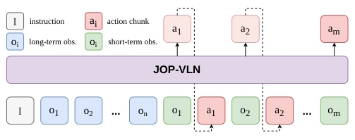
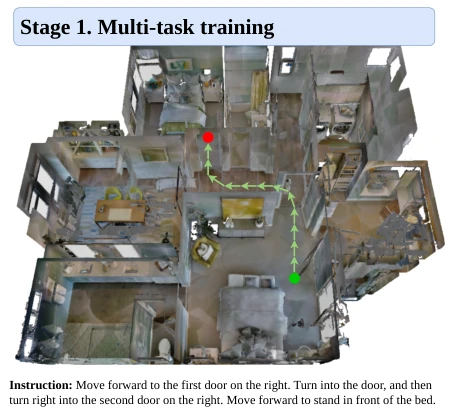
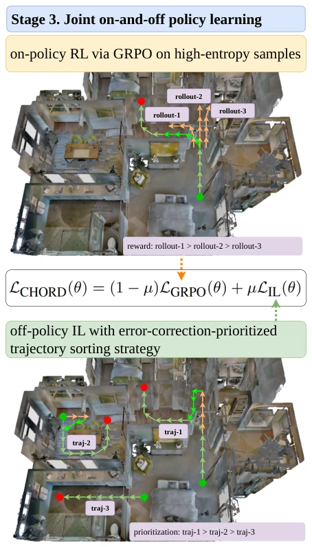
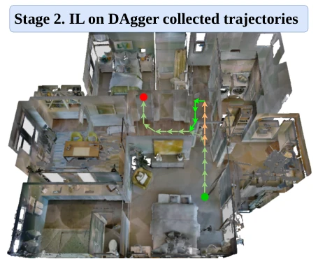
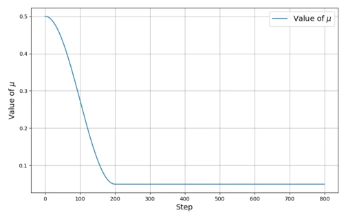
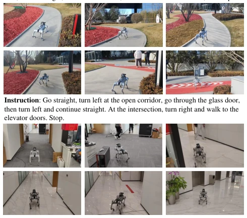
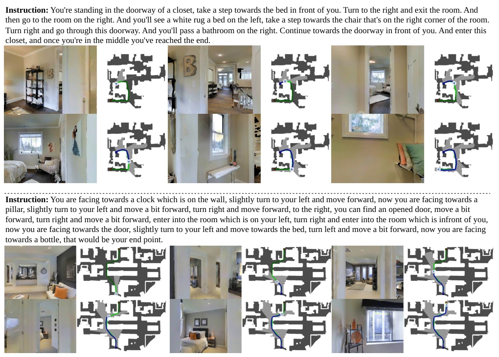

This JOP-VLN adds another spark to the VLN field, attempting to bring the "arch-enemies" of imitation learning and reinforcement learning to the same table to collaborate. Although the SOTA results are indeed striking, the 69.9% SR on R2R looks quite appealing, but the three-stage training pipeline is as complex as performing coronary artery bypass surgery on a robot. Authors claim to solve covariate shift, but essentially rely on DAgger data stacking + GRPO reward optimization. Most interesting is the "high entropy sampling", akin to only providing focused tutoring when students make mistakes; it saves compute but might overlook certain "biased subject" scenarios? Although real-world experiments were conducted, with 0.3s inference time plus 1.2s communication latency, this robot navigation is estimated to be slower than a turtle; real-time performance is a major question mark. However, unifying multimodal instructions and actions is still worth a positive review, as generalization in unseen scenarios is indeed stronger, and real-world few-shot adaptation also proves transfer potential.
The VLN task requires embodied agents to understand human language and navigate to designated locations; this is not merely navigation but also a test of cross-modal alignment. Existing VLM-based VLN methods are mainly divided into two camps: one is imitation learning (IL), relying on expert demonstrations [1]-[5], but prone to covariate shift, becoming confused when encountering unseen states; the other camp is reinforcement learning (RL), using verifiable rewards [7]-[12] to improve reasoning, but often relies on in-distribution data, lacking sufficient generalization. Although DAgger [6] can alleviate error accumulation in IL, it still overly relies on expert data. CHORD [13] attempts to combine both, but lacks adaptation specific to VLN. The motivation of this paper is to bridge the gap between these two camps, seeking both the stability of IL and the exploration capability of RL, resolving the contradiction between generalization and error correction, particularly robustness in unseen environments. Additionally, existing methods perform poorly on long-horizon decision making; this paper attempts to enhance long-horizon decision capabilities through joint learning.
方法Method
整体框架分三阶段。第一阶段是多任务训练，同时学动作预测和轨迹总结，打基础。第二阶段用 DAgger 算法生成轨迹，通过 oracle 纠正模型错误，强化纠错能力。第三阶段是核心，结合 CHORD 框架做 On-policy RL 和 Off-policy IL 的联合学习。创新点在于两个策略：一是“高熵轨迹采样”，只选模型预测不确定性高的样本（前 20%）做 GRPO 训练，防止模型过早自信导致梯度消失；二是“纠错优先排序”，在 IL 阶段优先学习那些模型之前犯过错的轨迹。此外，还用了动态权重 mu 调度，从 IL 主导平滑过渡到 RL 主导。模型基于 Qwen3-VL，采用多轮对话范式处理长短期记忆。具体到 GRPO，使用了四种奖励函数：格式、精确匹配、位置和距离奖励，通过优势函数计算优化策略。IL 部分则最小化交叉熵损失。这种设计让模型既能从专家数据中学习正确路径，又能通过探索发现潜在错误并修正。
The overall framework is divided into three stages. The first stage is multi-task training, simultaneously learning action prediction and trajectory summarization to lay the foundation. The second stage uses the DAgger algorithm to generate trajectories, correcting model errors via an oracle to strengthen error correction capabilities. The third stage is the core, combining the CHORD framework to perform joint learning of On-policy RL and Off-policy IL. The innovations lie in two strategies: first is "high-entropy trajectory sampling", selecting only samples with high model prediction uncertainty (top 20%) for GRPO training to prevent gradient vanishing caused by the model becoming overly confident too early; second is "error-correction priority sorting", prioritizing the learning of trajectories where the model previously made errors during the IL stage. Additionally, dynamic weight mu scheduling is employed, smoothly transitioning from IL dominance to RL dominance. The model is based on Qwen3-VL, adopting a multi-turn dialogue paradigm to handle long- and short-term memory. Specifically regarding GRPO, four reward functions are used: format, exact match, position, and distance rewards, optimizing the policy through advantage function calculation. The IL part minimizes cross-entropy loss. This design allows the model to learn correct paths from expert data while also discovering and correcting potential errors through exploration.

Fig. 1. Multi-turn Dialogue Paradigm.

Fig. 2. Stage 1. Multi-task training.

Fig. 4. Stage 3. Joint on-and-off policy learning with high-entropy and error-correction-prioritised trajectories.

Fig. 3. Stage 2. Imitation learning with DAgger trajectories. ↑denotes model-predicted actions, ↑denotes actions deviating from the optimal path, and ↑denotes oracle-corrected actions.

Fig. 5. µ schedule with cosine decay.
实验Experiments
实验在 R2R 和 RxR 基准上进行，Val-Unseen 设置。指标包括 SR, SPL, NE 等。JOP-VLN 在 R2R 上 SR 达 69.9%，超越 CorrectNav [30] 和 OmniNav [50]；RxR 上 SR 68.0%。实机实验在 Unitree Go2 上进行，few-shot 适应后表现稳健。消融实验证明三阶段有效：仅 IL 效果一般，加入 DAgger 后 SR 提升显著，加入 CHORD 和高熵采样后进一步提升。特别是纠错优先排序策略，让模型更关注失败样本。不过实机通信延迟较高，主要瓶颈在 WiFi 传输。对比表显示，JOP-VLN 在单视图 RGB 下优于全景方法，证明了其高效性。
Experiments were conducted on the R2R and RxR benchmarks under the Val-Unseen setting. Metrics include SR, SPL, NE, etc. JOP-VLN achieves an SR of 69.9% on R2R, surpassing CorrectNav [30] and OmniNav [50]; and an SR of 68.0% on RxR. Real-world experiments were conducted on the Unitree Go2, showing robust performance after few-shot adaptation. Ablation experiments prove the three stages are effective: IL alone yields average results, SR improves significantly after adding DAgger, and improves further after adding CHORD and high-entropy sampling. Especially the error-correction priority sorting strategy, which enables the model to focus more on failure samples. However, real-world communication latency is relatively high, with the main bottleneck lying in WiFi transmission. The comparison table shows that JOP-VLN outperforms panoramic methods under single-view RGB, proving its efficiency.

Fig. 6. Qualitative results of JOP-VLN in representative real-world environments.

Fig. 7. Qualitative results of JOP-VLN on the VLN-CE benchmarks.